Contents
- EDA example with PCA using the MEDA Toolbox.
- Inicialization, remember to set the path of the toolbox
- Step 1: Selection of the LVs
- Step 2: observations distribution and relationships
- Step 3: variables distribution and relationships
- Steps 1-3 can be repeated for a subset of selected variables
- Step 4: investigate differences between observations
- Step 4b: investigate differences with outliers
- Step 5: data set de test
EDA example with PCA using the MEDA Toolbox.
See README.txt for more details.
Data set and Analysis:
J. Camacho, P. Padilla and J. Verdejo, Networkmetrics: Multivariate
Visual Analytics for Time Series Networking Data. Technical Report.variables
1 A.ifIn1 18 B.ifIn9 35 C.ifIn9 2 A.ifIn2 19 B.ifIn10 36 C.ifIn10 3 A.ifIn8 20 B.ifIn4 37 C.ifIn12 4 A.ifIn14 21 B.ifOut1 38 C.ifIn14 5 A.ifOut1 22 B.ifOut2 39 C.ifOut1 6 A.ifOut2 23 B.ifOut3 40 C.ifOut2 7 A.ifOut3 24 B.ifOut4 41 C.ifOut3 8 A.ifOut4 25 B.ifOut8 42 C.ifOut4 9 A.ifOut8 26 B.ifOut9 43 C.ifOut5 10 A.ifOut9 27 B.ifOut10 44 C.ifOut7 11 A.ifOut10 28 B.ifOut11 45 C.ifOut9 12 A.ifOut11 29 B.ifOut12 46 C.ifOut10 13 A.ifOut12 30 B.ifOut14 47 C.ifOut11 14 A.ifOut14 31 C.ifIn1 48 C.ifOut12 15 B.ifIn1 32 C.ifIn2 49 C.ifOut14 16 B.ifIn2 33 C.ifIn3 17 B.ifIn8 34 C.ifIn5
where the name of each variable follows the format switch.if[In|Out]<N>. The remaining ports of the switches did not present any traffic load.
% coded by: José Camacho Páez. % last modification: 19/Apr/16.
Inicialization, remember to set the path of the toolbox
prep_x = 1; % centre X max_PCs = 10; % maximum number of PCs to take into account load data_proc
Step 1: Selection of the LVs
var_pca(cal,1:max_PCs,prep_x); % 2 PCs seem to be adequate
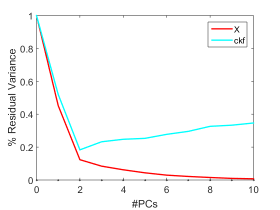 Step 2: observations distribution and relationships
scores and residuals, outliers detection
scores_pca(cal,1:2,[],prep_x,1); % there are two directions of variability, and observations 2, 9, 10 and 35 % should be studied with more detail mspc_pca(cal,1:2,[],prep_x,1); % check also 5 (residuals)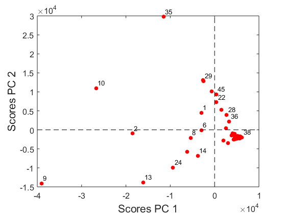 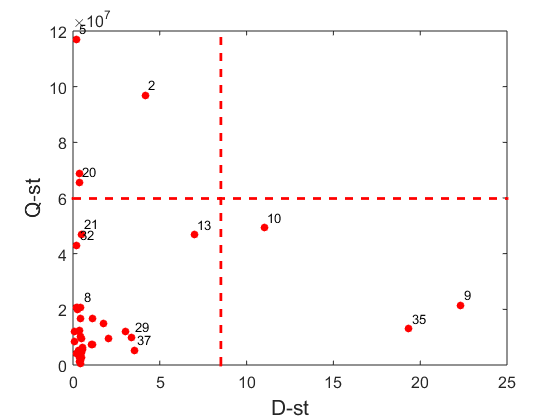
Step 3: variables distribution and relationships
loadings, MEDA and residuals, selection of variables
loadings_pca(cal,1:2,prep_x,1,lab); % two groups of variables are detected % GR1: C.ifIn10, C.ifOut10, C.ifIn3, C.ifOut3: traffic between Px/2 <=> Rx-A % GR2: C.ifOut9, A.ifOut8, C.ifIn1, C.ifIn9, A.ifIn8, C.ifOut1, A.ifIn14, % A.ifOut14: traffic between Px/1 <=> SWx-A meda_pca(cal,1:2,prep_x,0.5,'111',lab); % the same two groups are found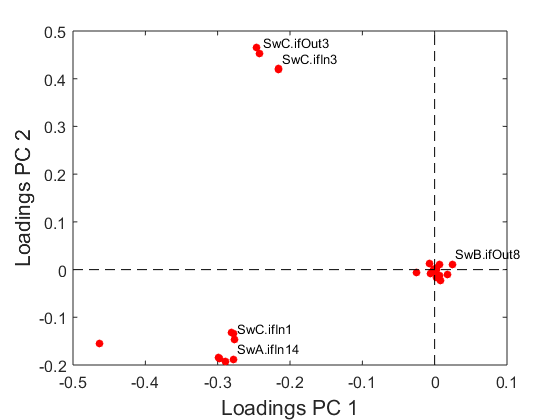

Steps 1-3 can be repeated for a subset of selected variables
To do that, excute the following code and then repeat the steps 1-3. Basically, the same conclusions are found, but this selection is suggested to simplify the interpretation of Step 4.
load data_proc sel = [3 4 9 14 31 33 35 36 39 41 45 46]; map = meda_pca(cal(:,sel),1:2,prep_x,0.5,0); [map,ord] = seriation(map); % variables reordering cal = cal(:,sel(ord)); test = test(:,sel(ord)); lab = lab(sel(ord));
Step 4: investigate differences between observations
Apply oMEDA of the two trends found in the score plot line plots are used to confirm the result
scores_pca(cal,1:2,[],prep_x,1); % the first trend is related to the group of variables GR1 dummy=-ones(48,1); dummy(35)=2; dummy([37,29,33,45])=1; dummy([10,2,6,8,1,25,14,24,13,9])=0; omeda_pca(cal,1:2,cal,dummy,prep_x,111,lab); figure, plot(1:size(cal,2),cal([12 16 19 18],:)','c'), hold on, plot(1:size(cal,2),cal([37,29,33,45],:)','r'), axis tight % the second trend is mainly related to the group of variables GR2 dummy=-ones(48,1); dummy(9)=2; dummy([13,24,14,25])=1; dummy([10,2,9,6,8,1,26,28,36,22,23,29,35,37,45])=0; omeda_pca(cal,1:2,cal,dummy,prep_x,111,lab); figure, plot(1:size(cal,2),cal([12 16 19 18],:)','c'), hold on, plot(1:size(cal,2),cal([13,24,14,25],:)','r'), axis tight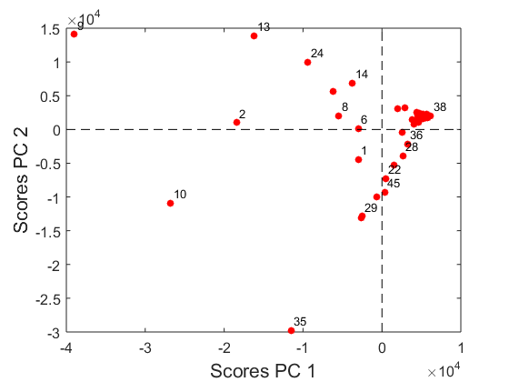 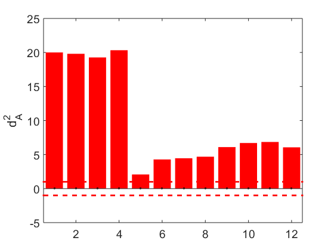 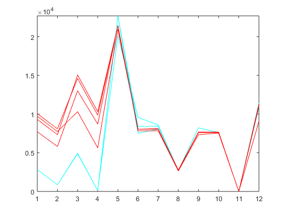 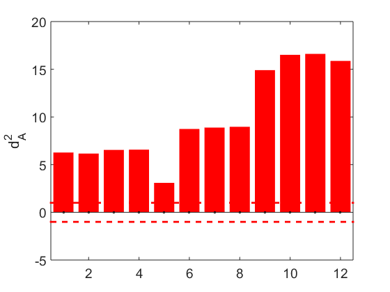 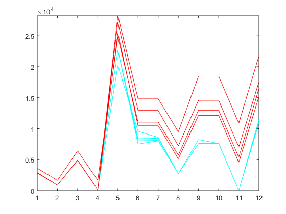
Step 4b: investigate differences with outliers
oMEDA and line plots of outliers Basically, all outliers present high load of traffic.
% outlier 2 dummy=-ones(48,1); dummy([10,2,6,8,1,25,14,24,13,9,26,28,36,29,35,37,33,45])=0; dummy(2)=1; omeda_pca(cal,1:2,cal,dummy,prep_x,111,lab); % outlier 9 dummy=-ones(48,1); dummy([10,2,6,8,1,25,14,24,13,9,26,28,36,29,35,37,33,45])=0; dummy(9)=1; omeda_pca(cal,1:2,cal,dummy,prep_x,111,lab); % outlier 10 dummy=-ones(48,1); dummy([10,2,6,8,1,25,14,24,13,9,26,28,36,29,35,37,33,45])=0; dummy(10)=1; omeda_pca(cal,1:2,cal,dummy,prep_x,111,lab); % line plot to confirm results figure, plot(1:size(cal,2),cal([12 16 19 18],:)','c'), hold on, plot(1:size(cal,2),cal([2,9,10],:)','r'), axis tight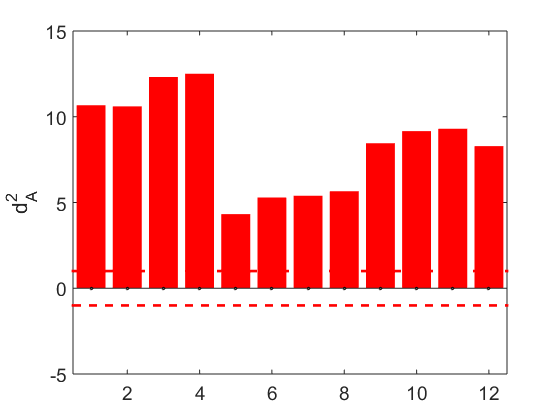 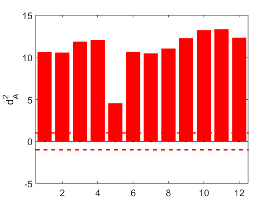 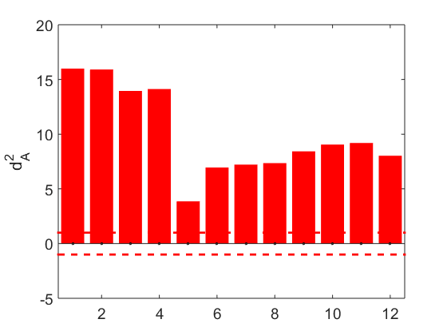 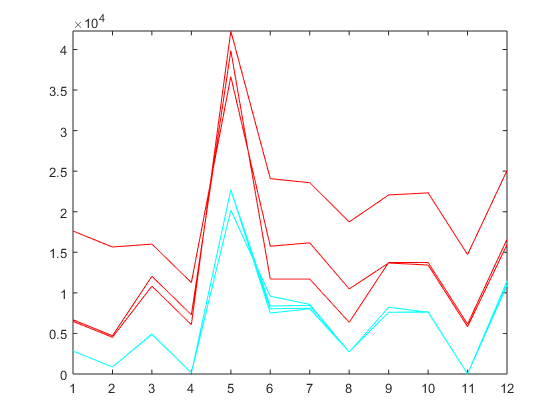
Step 5: data set de test
score plot and oMEDA (perform with the complete set of variables)
load data_proc
scores_pca(cal,1:2,test,prep_x,1);
dummy=-ones(101,1);
dummy([61,100,73,74,60,59])=1;
dummy([63,75,101])=0;
omeda_pca(cal,1:2,[cal;test],dummy,prep_x,111,lab);
dummy=-ones(101,1);
dummy([61,100,73,74,60,59])=0;
dummy([63,75,101])=1;
omeda_pca(cal,1:2,[cal;test],dummy,prep_x,111,lab);
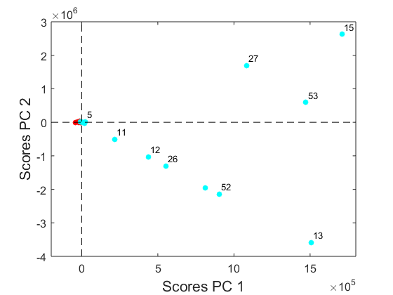 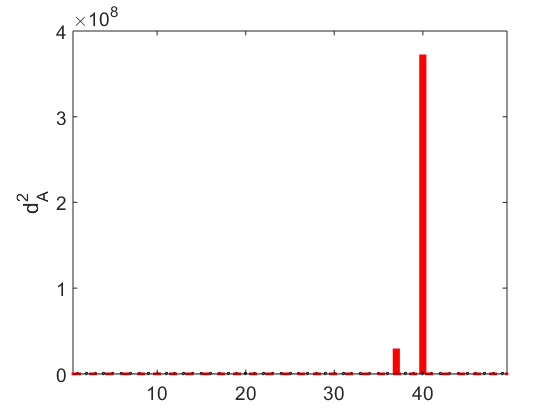 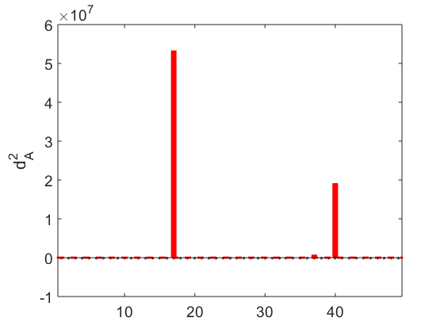